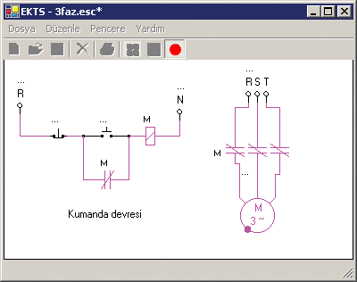

Devreyi çalıştırmak için araç çubuğunda bulunan  Çalıştır düğmesine tıklayınız. Eğer devrede herhangi bir sorun varsa program hata mesajı verecektir. Devrenin çalışması için bütün hataları düzeltmeniz gerekir.
Çalıştır düğmesine tıklayınız. Eğer devrede herhangi bir sorun varsa program hata mesajı verecektir. Devrenin çalışması için bütün hataları düzeltmeniz gerekir.
Devre çalışır durumdayken Start / Stop düğmelerine, sınır anahtarlarına veya direk rölelere tıklayarak devrenin davranışlarını inceleyebilirsiniz. Sınır anahtarlarını kalıcı olarak kullanmak için farenin sağ tuşunu kullanınız. Devre çalışırken, Şekil 11'de gözüktüğü gibi, elektrik akımının geçtiği bağlantılar ve çalışan elemanlar morumsu-kırmızı (magenta) renk ile gösterilir. Motorun çalışması ve dönüş yönü üzerinde bulunan yuvarlak noktayla temsil edilmektedir.
Devreyi durdurmak için Durdur düğmesine tıklayınız.

Şekil 12 Tasarlanan Devrenin Çalışma Anı.